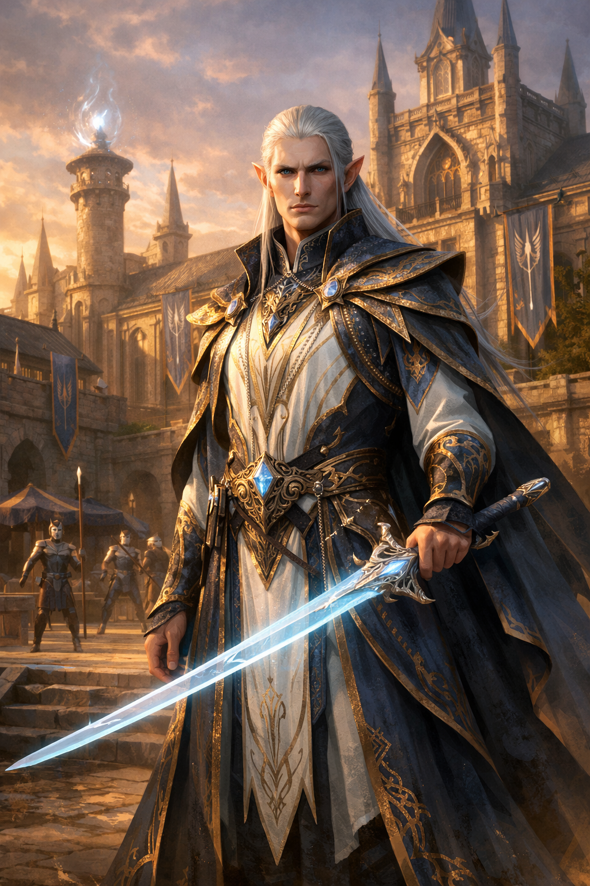

Escola Militar Kirkaryon

A Escola Militar Kirkaryon é uma das instituições fundadoras de Aurora, erguida para garantir a sobrevivência e defesa da cidade em seus primeiros dias turbulentos. Nomeada em homenagem a seu fundador, Kirkaryon Morgrin, a escola representa a união entre arte marcial, magia arcana e estratégia racional — uma combinação revolucionária que moldou a força militar de Aurora.
O Fundador: Kirkaryon Morgrin

Quando Aurora ainda era apenas um projeto frágil erguido entre fronteiras hostis, foi Kirkaryon Morgrin, Alto Elfo Bladesinger, quem deu forma àquilo que se tornaria o maior pilar de sua sobrevivência.
Kirkaryon não era um general comum, tampouco um mago isolado em torres de marfim. Formado nas tradições élficas mais antigas, dominava a dança da lâmina e o fluxo arcano com precisão absoluta. Ainda assim, foi sua capacidade de romper com a própria tradição que o tornou lendário. Onde seus pares viam a guerra como arte ou honra, Kirkaryon via responsabilidade.
Ele acreditava que nenhuma cidade sobreviveria apenas com coragem ou poder bruto. Sobreviveria, sim, com disciplina, preparo e conhecimento aplicado. Dessa convicção nasceu a Escola Militar de Aurora, posteriormente renomeada em sua homenagem.
A Filosofia de Kirkaryon
Sob a tutela de Kirkaryon, a escola uniu três fundamentos até então considerados incompatíveis: arte marcial, magia arcana e estratégia racional. Soldados aprenderam a manter formações sob fogo mágico. Magos aprenderam a conjurar pensando em linhas de frente e rotas de retirada. Oficiais passaram a ser treinados para preservar vidas, não para buscar reconhecimento.
O próprio fundador era a personificação dessa doutrina. Em combate, Kirkaryon movia-se com a elegância de um Bladesinger, mas com a precisão de um comandante experiente. Sua lâmina longa cortava no mesmo ritmo em que suas magias protegiam aliados e controlavam o campo de batalha. Nunca lutava para ser visto — lutava para que outros sobrevivessem.
Com o tempo, a escola tornou-se referência continental. Seus estandartes passaram a ser reconhecidos não pelo esplendor, mas pela eficiência silenciosa. Exércitos treinados ali eram conhecidos por recuar quando necessário, avançar quando preparados e jamais desperdiçar vidas por orgulho.
Décadas depois de consolidar a defesa de Aurora, Kirkaryon Morgrin desapareceu sem anúncio ou cerimônia. Não houve tumba, nem registro final. Ainda assim, sua presença permanece viva na escola que fundou — nas formações ensinadas, nas ordens curtas, no respeito absoluto pela preparação.
O Exterior da Escola
A Escola Militar Kirkaryon é um reflexo arquitetônico do edifício principal da Academia de Magia Arché Lys, com quem compartilha os vastos jardins centrais. Construída em mármore branco com detalhes em pedra cinza escura e aço forjado, a escola possui uma estética mais austera e marcial que sua contraparte acadêmica, mas não menos imponente. Enquanto a academia exibe veios de quartzo azul brilhante, a escola militar ostenta linhas de aço negro incrustado que formam padrões geométricos de formações de batalha.
O edifício espelhado possui sua própria torre — a Torre da Vigilância — posicionada ao lado direito, alcançando altura similar à Torre dos Fundadores da academia, com aproximadamente 100 metros. Do alto desta torre, que nunca dorme, instrutores e vigias podem observar toda a extensão dos campos de treinamento ao sul e as fronteiras norte da cidade. À noite, um farol de luz branca no topo da torre varre periodicamente o horizonte, complementando o sistema de vigilância de Aurora.
A Estátua do Fundador
Na entrada norte da escola, dominando o amplo pátio de formação, ergue-se a estátua colossal de Kirkaryon Morgrin, com mais de 8 metros de altura. A escultura, obra-prima em mármore branco de Carrara e mithril verdadeiro, retrata o fundador em postura de combate — o momento preciso entre o movimento e a quietude que define a dança da lâmina.
Sua lâmina longa élfica está erguida em uma das mãos, capturando a luz do sol de forma que parece vibrar com energia própria. A outra mão está estendida em gesto arcano, com dedos posicionados em uma mudra de proteção, e ao redor dela flutuam discretos símbolos arcanos entalhados em cristal suspenso por magia permanente.
Os olhos da estátua foram feitos com safiras encantadas que parecem acompanhar quem passa, e sua expressão transmite não ferocidade, mas determinação serena. O rosto élfico está marcado por runas de honra que brilham sutilmente ao anoitecer.
Na base de granito negro da estátua, runas élficas em mithril líquido brilham com luz prateada permanente, visíveis mesmo durante o dia. Elas proclamam em Alto Élfico:
"An lamm na fend. An mendu na erch. An dhaer na sav." "A lâmina protege. A mente vence. A disciplina salva."
Ao redor da base, placas de bronze listam os nomes de todos os comandantes da escola desde sua fundação, e cadetes recém-formados fazem o juramento militar tocando a base da estátua — uma tradição ininterrupta há séculos.
A Integração Arquitetônica
Os dois edifícios — a academia de magia e a escola militar — são conectados por uma grande passarela suspensa no segundo andar, decorada com runas de proteção e força. Esta ponte não é meramente funcional; ela simboliza fisicamente a união entre conhecimento arcano e poder marcial que define Aurora.
O jardim central que separa as duas instituições é meticulosamente mantido, com caminhos de pedra polida, fontes ornamentadas e esculturas que representam tanto magos quanto guerreiros da história de Aurora. A simetria quase perfeita dos edifícios cria um equilíbrio visual que reflete o equilíbrio filosófico entre as duas forças.
O Interior da Escola
O interior da Escola Militar Kirkaryon é funcional e disciplinado, mas não desprovido de beleza. O Corredor dos Estandartes, equivalente ao Grande Corredor Central da academia, exibe bandeiras de batalhas históricas, armaduras de heróis caídos e placas comemorativas de formações militares que defenderam Aurora ao longo dos séculos.
Diferente dos afrescos mágicos da academia, aqui as paredes são decoradas com relevos de pedra que retratam táticas de batalha, manobras militares e momentos decisivos da história de Aurora. Cada relevo serve como ferramenta de ensino para os cadetes.
As salas de treinamento são amplas e equipadas com arsenais encantados, campos de simulação mágica e arenas de duelo. Laboratórios especializados permitem que estudantes pratiquem a combinação de magia e combate — a essência da doutrina Bladesinger trazida por Kirkaryon.
Liderança Atual
A escola é atualmente comandada por Robert Greyrat, um veterano guerreiro que também serve como Chefe do Treinamento Militar na Tábula dos 10. Robert é conhecido por sua disciplina férrea, mas também por sua capacidade de adaptar os ensinamentos tradicionais às necessidades contemporâneas de Aurora.
Sob sua liderança, a escola mantém os princípios de Kirkaryon enquanto evolui para enfrentar novos desafios — das ameaças de necromancia ao crescente uso de magia de guerra em conflitos regionais.
Integração com a Academia Arché Lys
Embora mantenham identidades distintas, a Escola Militar Kirkaryon e a Academia de Magia Arché Lys trabalham em estreita colaboração. Estudantes promissores da academia que demonstram aptidão para combate são convidados a receber treinamento especializado na escola militar, enquanto cadetes com potencial arcano recebem instrução avançada na academia.
Essa simbiose cria os temidos Magos de Batalha de Aurora — guerreiros-magos capazes de canalizar poder arcano em combate direto, mantendo viva a tradição Bladesinger de Kirkaryon Morgrin.
"A lâmina protege. A mente vence. A disciplina salva." — Lema da Escola Militar Kirkaryon